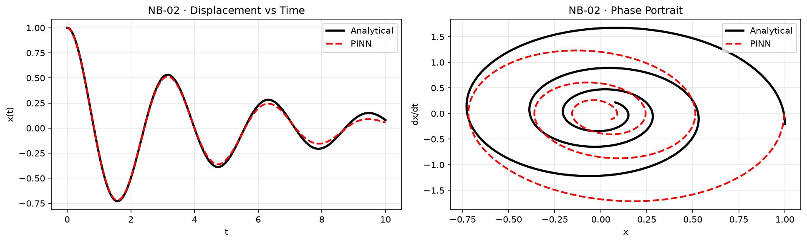

Prerequisites
This article assumes familiarity with the concepts from Article 1: the PINN loss structure, collocation points, and basic PyTorch autograd. If you are new to PINNs, start at the introduction.
Nested automatic differentiation, two initial conditions, the hard-constraint ansatz, and the spectral bias problem that makes oscillatory physics hard for neural networks.
In Introduction to PINNs, we solved $dy/dx = -y$, a single scalar first-order ODE. Real engineering systems are rarely so simple. The vast majority of dynamic models in mechanical, electrical, chemical, and biomedical engineering are governed by second-order dynamics:
The general form is Newton's second law applied to a single degree of freedom:
where $m$ is mass, $c$ is the damping coefficient, $k$ is the spring constant, and $F(t)$ is the external forcing. Dividing through by $m$ and introducing the standard dimensionless parameters:
Here $\omega_0$ is the natural frequency (radians per second), the oscillation frequency of the undamped system, and $\zeta$ is the damping ratio, which determines the qualitative character of the response. The three regimes are:
| Regime | Condition | Character | Engineering example |
|---|---|---|---|
| Under-damped | $\zeta < 1$ | Oscillates, decaying amplitude | Suspension system, servo motor |
| Critically damped | $\zeta = 1$ | Fastest non-oscillatory return | Door closers, instrument dampers |
| Over-damped | $\zeta > 1$ | Slow monotonic return | Shock absorbers, dashpots |
This notebook focuses on the under-damped case ($\zeta = 0.20$, $\omega_0 = 3.0$), which produces oscillatory dynamics, the hardest regime for a PINN to learn, and the most interesting from a methodology standpoint.

Fig. A — PINN solution for the damped harmonic oscillator. Both position $u(t)$ and velocity $v(t)$ are predicted simultaneously by the same network using nested automatic differentiation for the second-order residual.
For the free-vibration under-damped case ($F(t) = 0$, $\zeta < 1$) with initial conditions $u(0) = u_0$ and $\dot{u}(0) = v_0$, the exact closed-form solution is:
where $\omega_d = \omega_0\sqrt{1-\zeta^2}$ is the damped natural frequency, always less than $\omega_0$, since damping reduces the oscillation rate. The solution is a product of an exponentially decaying envelope $e^{-\zeta\omega_0 t}$ and a sinusoidal oscillation at frequency $\omega_d$.
For the notebook parameters ($\omega_0 = 3.0$, $\zeta = 0.20$, $u_0 = 1.0$, $v_0 = 0.0$, $T = 6.0$ s):
The ODE residual for the damped oscillator requires the second time-derivative $\ddot{u}$:
In Introduction to PINNs, we computed one derivative: $\frac{d\hat{y}}{dx}$. Here we need two: first $\dot{u} = \frac{du}{dt}$, then $\ddot{u} = \frac{d^2u}{dt^2}$. PyTorch handles this by calling torch.autograd.grad twice in sequence, but the first call must use create_graph=True.
Why? When create_graph=True is set, PyTorch does not free the intermediate computational graph after computing $\dot{u}$. This graph is then available for a second backward pass to compute $\ddot{u}$. Without it, the first differentiation discards the graph, and the second call raises a runtime error.
autograd.grad call (with create_graph=True) computes $\dot{u}$ while preserving the graph. The second call differentiates $\dot{u}$ to obtain $\ddot{u}$. Both are assembled into the ODE residual.def residual(model, t): u = model(t) # First derivative: create_graph=True keeps the graph for the second pass u_t = torch.autograd.grad( u, t, torch.ones_like(u), create_graph=True )[0] # Second derivative: differentiate u_t w.r.t. t u_tt = torch.autograd.grad( u_t, t, torch.ones_like(u_t), create_graph=True )[0] # ODE residual: ü + 2ζω₀u̇ + ω₀²u = 0 return u_tt + 2*zeta*omega0*u_t + omega0**2 * u
Compared to the first-order case, the only change is one additional autograd.grad call. The computational overhead is modest, PyTorch simply extends the reverse-mode pass one level deeper. This pattern generalizes immediately: $n$-th order ODEs require $n$ nested calls, each with create_graph=True on all but the last.
create_graph=True on the first call causes PyTorch to free the intermediate computation tape. The second autograd.grad call then raises a RuntimeError. The rule is: use create_graph=True on every derivative that will itself be differentiated.
A second-order ODE requires two initial conditions to specify a unique solution. Geometrically: the phase space $(u, \dot{u})$ is two-dimensional, and specifying only $u(0) = u_0$ leaves the trajectory's direction, its initial velocity, entirely unconstrained. The result is infinitely many trajectories, all satisfying the equation and the single condition, but diverging immediately.
The initial condition loss must therefore include both the initial displacement and the initial velocity:
Note that computing $\dot{u}(0)$ uses exactly the same autograd.grad call as the residual computation, the derivative of the network at a specific point. This means the IC loss on the velocity shares the same computational infrastructure as the physics residual. There is no special treatment required; the network's derivative is already a first-class differentiable expression.
In practice, the physics loss and the IC loss have different natural scales. Early in training, the physics loss is large (the network knows nothing about the ODE) and dominates the gradient. The IC loss, which starts at a moderate value and should be satisfied quickly, gets insufficient gradient budget and is learned slowly.
The notebook addresses this with a fixed weight of 20× on the IC loss:
This forces the optimizer to prioritize the initial conditions early, preventing the degenerate situation where the network satisfies the ODE over most of the domain but starts from the wrong state. The choice of 20× is problem-dependent and can be treated as a hyperparameter; adaptive weighting methods (Self-Adaptive PINNs, NTK-based balancing) provide more principled approaches for larger systems.
def loss_fn(model): r = residual(model, t_col) loss_phys = torch.mean(r**2) # Evaluate network and its first derivative at t=0 u_pred = model(t0) u_t0 = torch.autograd.grad( u_pred, t0, torch.ones_like(u_pred), create_graph=True )[0] # Both value and velocity must match initial conditions loss_ic = (u_pred - u0)**2 + (u_t0 - v0)**2 # Up-weight IC loss: 20x ensures it dominates early in training return loss_phys + 20.0 * loss_ic.squeeze()
The 20× weighting trick is a soft constraint: we encourage the network to satisfy the initial conditions, but we cannot guarantee it will. A more elegant approach, and one that provably satisfies both initial conditions by construction, is the hard-constraint ansatz.
The idea: wrap the raw neural network $N(t)$ in a function that is guaranteed to satisfy $u(0) = u_0$ and $\dot{u}(0) = v_0$, regardless of $N$'s output. One such construction is:
Verification: At $t=0$: $\hat{u}(0) = u_0 + 0 + 0 = u_0$. Taking the time derivative: $\dot{\hat{u}} = v_0 + 2t \cdot N(t) + t^2 \cdot N'(t)$. At $t=0$: $\dot{\hat{u}}(0) = v_0 + 0 + 0 = v_0$. Both initial conditions are satisfied identically for any value of $N(0)$ and $N'(0)$.
The training loss for the hard-constraint PINN contains only the physics residual, the IC terms are gone entirely, because the ansatz structure makes them structurally impossible to violate:
class HardIC(nn.Module): def __init__(self, layers, u0, v0): super().__init__() self.core = MLP(layers) self.u0 = u0 self.v0 = v0 def forward(self, t): # Ansatz: u(t) = u0 + v0*t + t² * N(t) # Satisfies u(0)=u0 and u'(0)=v0 for any N return self.u0 + self.v0 * t + (t**2) * self.core(t) # Training: only physics residual, no IC terms needed for ep in range(6000): opt2.zero_grad() r = residual(model2, t_col) # purely the ODE residual loss = torch.mean(r**2) loss.backward() opt2.step()
The hard-constraint model consistently achieves lower relative L2 error in fewer epochs. By removing the tension between satisfying the physics and the initial conditions as separate loss terms, the optimizer can devote its full gradient budget to minimizing the ODE residual across the domain. The notebook reports hard-constraint relative L2 error approximately 2–4× lower than the soft-constraint equivalent at the same epoch count.
The most important conceptual lesson of this notebook is not about nested derivatives or hard constraints, it is about a fundamental limitation of smooth neural networks called spectral bias.
Rahaman et al. (2019) showed empirically and theoretically that neural networks with smooth activation functions (Tanh, sigmoid, GELU) preferentially learn low-frequency components of the target function first. The network explores its parameter space in a direction that minimizes the loss from large-scale, slowly-varying features before it is capable of representing rapid oscillations.
For PINNs, this creates a concrete failure mode. Consider two versions of the damped oscillator with different natural frequencies:
| Natural Frequency $\omega_0$ | Oscillations in $[0, 6]$ | PINN Convergence | Relative L2 Error |
|---|---|---|---|
| $\omega_0 = 1.0$ | ~1 cycle | Good, converges in ~3,000 epochs | $\sim 10^{-3}$ |
| $\omega_0 = 3.0$ (notebook) | ~3 cycles | Moderate, converges in ~8,000 epochs | $\sim 5\times10^{-3}$ |
| $\omega_0 = 10.0$ | ~10 cycles | Poor, often fails to converge | $>10^{-1}$ |
The failure mode at $\omega_0 = 10$ is not a matter of insufficient training time. The network genuinely cannot represent rapid oscillations because the smooth activation functions create a spectral bottleneck: a Tanh layer with $n$ neurons cannot efficiently represent functions with spectral content much above $n/4$ cycles per unit length. For a 64-neuron layer, anything above ~16 cycles per unit domain width is effectively invisible to the network.
The spectral bias is the neural network analog of aliasing in digital signal processing. Just as a sampled signal cannot represent frequencies above the Nyquist limit without aliasing artifacts, a finite-width smooth network cannot represent frequencies above an implicit bandwidth limit without systematic errors. The crucial difference is that in PINNs, the "bandwidth limit" is not set by a sampling rate but by the network architecture and activation function choice, and it is not obvious or easy to compute a priori.
Active research is addressing spectral bias through multiple strategies:
Training the soft-constraint PINN for 8,000 epochs with Adam at $\eta = 2\times10^{-3}$, the model converges to a relative L2 error of approximately $5\times10^{-3}$ for $\omega_0 = 3.0$, $\zeta = 0.20$. The hard-constraint variant requires only 6,000 epochs to achieve a lower error of approximately $8\times10^{-4}$.
The table below summarizes how the PINN formulation evolves from the first-order ODE case to the second-order oscillator, and anticipates the extensions needed for PDE problems in later articles:
| Aspect | Article 1: First-Order ODE | Article 2: Second-Order ODE | PDEs (Heat Eq. onward) |
|---|---|---|---|
| Network inputs | $x \in \mathbb{R}$ | $t \in \mathbb{R}$ | $(x, t) \in \mathbb{R}^2$ |
| Autograd calls for residual | 1 (first derivative) | 2 (nested, first & second) | 2+ (mixed partials) |
| Number of initial conditions | 1 ($y(0) = 1$) | 2 ($u(0) = u_0$, $\dot{u}(0) = v_0$) | 1 IC + boundary conditions |
| Collocation point shape | 1D line $[0, 5]$ | 1D line $[0, T]$ | 2D grid $(x, t) \in [0,1]\times[0,T]$ |
| Hard constraint ansatz | $u_0 + t \cdot N(t)$ | $u_0 + v_0 t + t^2 N(t)$ | Domain-dependent construction |
| Key failure mode | Too few collocation points | Spectral bias at high $\omega_0$ | Spectral bias + stiffness + coupling |
The notebook is available at github.com/alishahmohammadi22/physics-ai-pinns, file 01_Beginner/02_second_order_odes.ipynb. It is self-contained and runnable on CPU in under 5 minutes.
The damped harmonic oscillator introduces three concepts that appear repeatedly in every subsequent article in this series:
Nested autograd is the natural generalization. Going from first- to second-order dynamics requires exactly one additional autograd.grad call with create_graph=True. This pattern extends to any order and to mixed partial derivatives in PDEs. The engineering implication is that PINNs can natively handle Navier-Stokes, heat equations, and elasticity equations without any change to the fundamental training architecture.
Hard constraints are better than soft constraints. Whenever the initial or boundary conditions can be encoded directly into the network's output layer through an ansatz, doing so eliminates loss terms, reduces optimizer conflict, and accelerates convergence. This is not always possible, complex geometries resist simple ansatz constructions, but when it is available, it should be used.
Spectral bias is the governing challenge. For smooth-activation networks, the effective resolution in frequency space is bounded by the network width. Any problem with high-frequency dynamics, fast oscillations, sharp fronts, thin boundary layers, will expose this limitation. The rest of this series is, in large part, a catalog of techniques developed to overcome it.